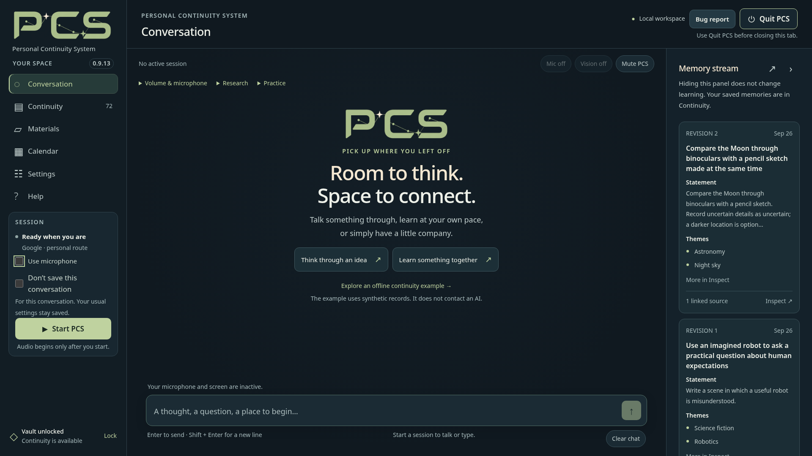

In this guide & related guides
- Before you begin
- 1. Download and extract the application
- 2. Open PCS and create your vault
- 3. Choose your conversation route
- 4. Check the result, then stop or quit deliberately
- Updating an existing installation
- When something goes wrong
Read next
Before you begin
PCS is a Windows application with an interface that opens locally in your browser. The app is free; cloud AI usage can incur charges from your chosen provider. The supported Local route needs compatible Windows/NVIDIA hardware and separate model and runtime downloads.
This is a pre-release. Automated checks do not establish perfect microphone recognition, live-provider timing, Windows hardware compatibility or successful capture from every website. Begin with non-sensitive example information and keep backups.
Existing users: saving the first web source adds a PCS 0.9.13 minimum-reader requirement to that vault, even if the source is later deleted. Keep a backup made before using the feature. See Updating an existing installation .
1. Download and extract the application
Use
PCS-0.9.13-Windows-x64.zip
for the complete Windows application. The separately attached Source ZIP is for development, not the easiest way to start the app. Use the named release assets, not GitHub's automatic Source code archive.
Extract the entire ZIP into a fresh, writable folder and keep its files together, including
support
. Do not run it inside an archive viewer or overlay an older installation. Existing users should follow
Updating an existing installation
below.
Python, application dependencies and offline English speech recognition are included. The Local conversation model and runtime are not. Use the checksum file to check download integrity. Developers can obtain the matching Source ZIP .
The top level keeps
Start PCS.exe
and
START_HERE.md
easy to find.
docs/HELP.html
opens full offline Help without starting PCS. Current guides, developer references and history have separate folders. Do not move or delete package members manually; the launcher verifies its manifest.
2. Open PCS and create your vault
Double-click Start PCS.exe . First launch prepares the bundled runtime and dependencies, designed to work offline and leave system Python unchanged. Use the browser page opened by the launcher.
The address begins with
http://127.0.0.1
. The full launch URL includes an access token: keep that full address private, including in screenshots and support reports.
Choose
Create a vault
, enter and confirm a long, unique passphrase, and store it safely. PCS cannot recover a forgotten passphrase. Existing backup users can choose
Restore an encrypted backup instead
; follow the included
docs/RESTORE_VAULT.md
rather than experimenting with your only copy.
{kind=link}

Open image3. Choose your conversation route
Google or OpenAI
Open Settings → Connection , select your Conversation provider , and enter its Conversation API key. Review Learn from our conversations and recall personal memories and its sharing explanation, then choose Save settings . Memory and preparation normally use your conversation provider unless you configure their optional overrides.
Return to Conversation . Leave Use microphone off for a text-only first session, or enable it and review the browser permission and input meter. Choose Start PCS . Check provider billing separately; the PCS download is not a supply of cloud API credits.
For OpenAI voice, Settings → OpenAI turn completion offers patient semantic detection (the default), balanced semantic detection, and a 1.5-second silence-based fallback. Apply changes on the next Start. These are turn-taking options, not a promise that every pause or sound will be interpreted correctly.
Supported Local route
Open Settings → Connection → Local conversation . Use Download model , Get runtime and Download CUDA libraries for the specifically supported files. Extract both runtime archives into the same folder, then select Choose runtime folder… and Choose model file… .
Review continuity and local-tool choices, enable Use local mode , and save. The separate Start local conversation action can also start a local session. There is no cloud fallback. Local vision and network research are unavailable. See bundled Help for supported files and hardware limitations.
Saved web sources in Materials
Open Materials → Reference notes → Saved web sources → Add from web , or ask during an eligible cloud conversation with Search and Materials sharing enabled. Ask explicitly to save the source; a routine search does not automatically create one.
The importer captures extracted text from one accessible public HTTPS HTML, TXT or Markdown page, within its size limits. It does not execute interactive quizzes, crawl whole sites, fetch remote PDFs or recover missing answer keys. The captured source, generated notes and explicitly saved bookmarks remain distinct. Inspect the captured text and save confirmation before relying on it.
4. Check the result, then stop or quit deliberately
Use a simple example conversation and inspect any saved outcome. A spoken request or a queued notice is not proof that a change finished. Stop PCS ends the conversation; Lock also closes vault access. Quit PCS shuts the app down after confirmation.
Closing the browser tab can leave the desktop host running and the vault unlocked. Use the app's controls for the state you intend. Read memory controls and what stays local and what is shared , together with the current bundled Help, before adding personal material.
Updating an existing installation
A fresh extraction does not automatically find the vault in an older PCS folder. Keep the old installation and a separate backup until the new copy is verified.
Before saving your first web source: keep a pre-feature backup. That first save makes the vault require PCS 0.9.13 or newer; deleting the source does not remove the requirement. Merely opening an older vault in 0.9.13 does not add it. Restoring a pre-feature backup rolls back to its saved state, not your later work. The encryption format is unchanged.
- In the old version, save edits, stop the conversation and finish or cancel background work. Keep the vault unlocked and use Backup & restore → Save current backup… . Wait for confirmation, save the backup outside the installation and keep its passphrase safe. Then choose Quit PCS and wait for shutdown.
- Extract the new Windows ZIP into a fresh folder and launch Start PCS.exe . Choose Restore an encrypted backup instead —do not create a new vault. Select the backup, choose Check backup , review the counts, and choose Restore this backup .
-
Choose
Unlock existing
with the backup's passphrase. Copy the original files from the old
data/Materialsfolder into the new installation'sdata/Materialsfolder, preserving filenames, contents and relative subfolders. Refresh documents with the vault unlocked and the conversation stopped. - Check saved records and settings, reselect any automatic-backup destination, and replace shortcuts that still launch the old version. Never run both installations against the same data directory.
Encrypted vault backups include saved records, prepared notes, saved web snapshots and bookmarks, but not original local Materials files.
Restoring does not merge with an existing vault. Detailed recovery guidance is in
docs/RESTORE_VAULT.md
inside the download.
Alternative: copy the fully stopped data folder
Quit PCS and wait for shutdown. Back up the entire
data
folder, including Materials. Before starting a fresh extraction, copy that folder beside its
Start PCS.exe
without merging it into an existing data folder. Keep the original, unlock the new copy with the current passphrase, and verify it. Use your actual data directory if you configured a custom path.
The in-app backup/restore limit is 256 MiB; larger vaults need the fully stopped-folder procedure. Original Materials in a folder copy are ordinary, unencrypted files. Preserve journals after an uncertain shutdown rather than deleting them.
When something goes wrong
Connected does not always mean input is available. Read the status: Local pauses listening during processing and speech; connection renewal can pause forwarding. A preventive OpenAI wait can keep one never-sent answer pending for up to two minutes and request it once when allowance permits. Do not repeat a pending question. A cancelled, expired or rejected request has a different notice and is not automatically replayed. Provider limits and memory-quality limitations remain.
In-app
Help
works offline, including while the vault is locked. For startup diagnostics, the included guide describes
support/Start with console.cmd
. Export
Bug report
before quitting when possible, and review it before sharing; nothing is uploaded automatically. Never post keys, passphrases, full launch URLs, private vaults or personal conversations.
Guide for PCS 0.9.13. See the bundled Help and release notes for detailed controls and limitations.